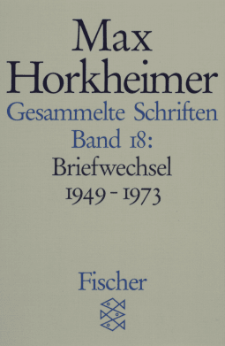
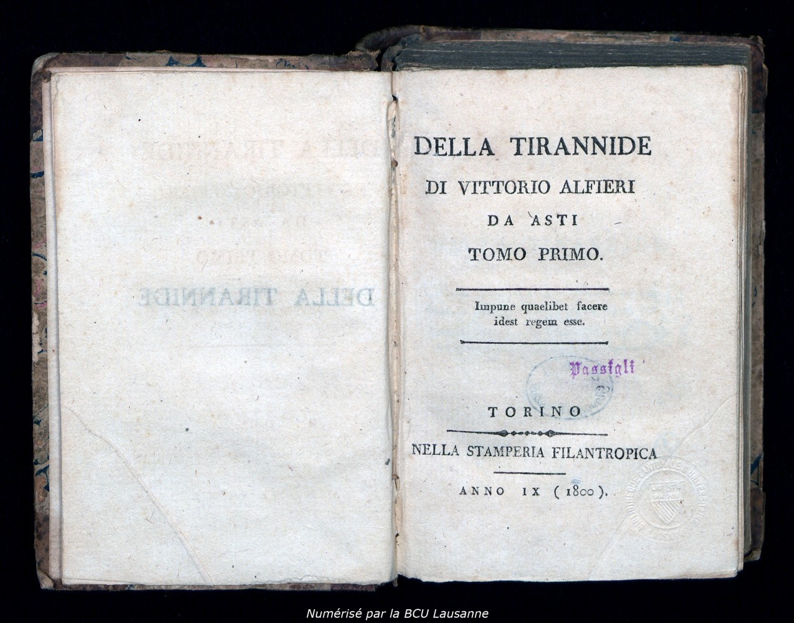
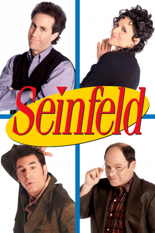

53:39 · 10 OPERE
Il lento tramonto del premio Nobel.
Il filo del discorso
L’annuncio del Nobel per la medicina2023 a KatalinKarikó e DrewWeissman è il punto di partenza di una critica al prestigio delle istituzioni e al rapporto fra cultura e potere. Il relatore legge la decisione come offesa e come tentativo di consolidare una narrazione politica; sono sue interpretazioni,che il video non dimostra con documenti sulle deliberazioni. Il discorso richiama controversie deiNobel,censura,retorica pubblicitaria e responsabilità degli intellettuali. Una lettera diMarcuse aHorkheimer e una definizione diAlfieri sostengono il tema della distanza fra autorità e giustizia; MinimaMoralia introduce il danno che le forme sociali possono infliggere alla vita individuale. Nella conclusione,Seinfeld diventa un esempio polemico di intrattenimento centrato sul quotidiano e sulla autoreferenzialità. La scheda conserva il percorso fra scienza,etica e lettura,ma distingue il giudizio politico dalla motivazione scientifica del premio,dalle autorizzazioni dei vaccini e dagli effetti avversi documentati. Precisa inoltre le differenze fra i comitatiNobel,il rinvio del premio letterario2018 e la sua successiva assegnazione,e separa fatti storici,aneddoti non riscontrati e responsabilità penali individuali.
I libri nel discorso

Apologia di Socrate
Identificazione probabile
Copertina del volume Apologia di Socrate. Critone: BUR · Apologia di Socrate. Critone · a cura di Maria Michela Sassi, 1993
Copertina autentica del volume BUR contenente Apologia di Socrate e Critone. Il secondo titolo non è aggiunto come citazione del video; l’autore del testo è Platone, con Socrate come figura protagonista.
Socrate sul non sapere della morte,riconoscibile inApologia29a–b; titolo non pronunciato.
Passaggio 6:07 ↗ · Fonti e libro ↗
Il grande dittatore (The Great Dictator)
Grafica dell’edizione video Criterion: Film statunitense del 1940, United Artists, regia e sceneggiatura di Charles Chaplin, 125 minuti. Immagine della grafica Criterion, numero 565, disegnata da Olly Moss; non copertina libraria o locandina originale.
Grafica autentica della edizione video, con le due identità rappresentate in orientamenti opposti. La voce riguarda un film.
CharlieChaplin eIlgrandedittatore espliciti,come esempio del ridicolo della tirannide.
Passaggio 8:43 ↗ · Fonti e libro ↗
Iliade
Copertina: Einaudi · ET Classici · 2014
Copertina autentica dell’edizione di riferimento, controllata visivamente. Non identifica l’esemplare letto o citato nel video.
Iliade esplicita; la menzione successiva del cavallo diTroia non è assegnata come episodio del poema.
Passaggio 14:20 ↗ · Fonti e libro ↗
Gesammelte Schriften,Band18: Briefwechsel1949–1973
Identificazione probabile
Copertina: Gesammelte Schriften in19Bänden,Band18: Briefwechsel1949–1973,Fischer Taschenbuch,1novembre1996,1012pagine,ISBN9783596273928. A cura diGunzelinSchmidNoerr. È un volume di corrispondenza,non l’intera opera in19volumi; la edizione precisa mostrata non è determinata.
Copertina autenticaFischer con nomeHorkheimer,numero18 e intervallo1949–1973,letti nella immagine intera. Il1943 della ASR non è assunto come titolo corretto del volume. La singola lettera gennaio1973 non è stata collazionata sul manoscritto o sulla pagina originale.
EpistolarioHorkheimer e letteraMarcuse del gennaio1973; identificazione probabile del volume18,numero non pronunciato.
Passaggio 21:47 ↗ · Fonti e libro ↗
Della tirannide
Identificazione probabile
Frontespizio delTomoPrimo,esemplareBCULosanna,1800: Composto aSiena nel1777 e successivamente riveduto. Immagine del frontespizio delTomoPrimo,esemplareAZ8369 dellaBCULosanna,con indicazioneTorino,NellaStamperiaFilantropica,AnnoIX(1800). La biblioteca segnala una probabile provenienza parigina e una possibile contraffazione: non è una copertina moderna,né una prima edizione1777.
Riproduzione del libro aperto,con frontespizio,anno1800 e timbri bibliotecari. ProvenienzaBCULosanna indicata nella immagine. La collocazione e la data editoriale sono dichiarate senza sciogliere la attribuzione dubbia aTorino oParigi; nessunISBN attribuito al volume antico.
VittorioAlfieri,1777 e definizione riconoscibile del potere di eludere le leggi con impunità,I,II; titolo non pronunciato.
Passaggio 35:38 ↗ · Fonti e libro ↗
La Repubblica
Copertina: Laterza · La Repubblica · edizione con testo a fronte di riferimento
Immagine associata all’ISBN di riferimento e controllata visivamente; edizione e traduzione non identificate come quelle citate o lette nel video.
Politeia/Repubblica esplicita,apertura alPireo e filosofo governante.
Passaggio 44:19 ↗ · Fonti e libro ↗
Minima moralia
Copertina: Einaudi, 2015
MinimaMoralia eAdorno espliciti,con il sottotitolo sulla vita danneggiata.
Passaggio 46:43 ↗ · Fonti e libro ↗
Matrix (The Matrix,1999)
Locandina del film Matrix1999 dal catalogo digitale: Film1999,regia di Lana e Lilly Wachowski,KeanuReeves,LaurenceFishburne,CarrieAnneMoss. Locandina orizzontale del catalogo digitale,non copertina narrativa o fotogramma della specifica scena citata.
Visti interamente titolo e personaggiNeo,Morpheus,Trinity. Immagine acquisita dal riferimentoog:image della pagina del film; non si attribuisce una edizioneDVD o il1994 a un film uscito nel1999.
FilmMatrix esplicito; riusata la voce già inserita,senza nuova immagine duplicata.
Passaggio 47:36 ↗ · Fonti e libro ↗
Seinfeld
Locandina ufficiale della serie Seinfeld: Sitcom statunitense,1989–1998,creata daLarryDavid eJerrySeinfeld. Locandina ufficiale della serie dal catalogoSonyPictures,con i quattro interpreti principali; non copertina di libro,di un singolo episodio o di una specifica edizioneBlu-ray.
Vista interamente la locandina con JerrySeinfeld,JuliaLouisDreyfus,MichaelRichards eJasonAlexander. Il catalogo distingue la serie dalle edizioni homevideo e dal soundtrack; non si catalogano come libri reali gli oggetti editoriali immaginari della trama.
Seinfeld esplicita,personaggi e formula showaboutnothing; voce di serie,non un singolo episodio non titolato.
Passaggio 48:35 ↗ · Fonti e libro ↗
Beffe e beffatori in nome di una crisi
Identificazione probabile
Copertina: Lulu, 2021
Beffe e beffatori e richiamo al proprio libro sulla crisi pandemica; titolo incompleto,riconoscibile nella voce già catalogata.
Passaggio 53:01 ↗ · Fonti e libro ↗